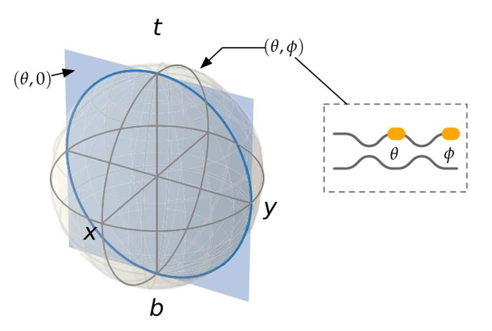

A light beam has different properties, such as:
The solution for this is Integrated Photonics technology. The image below shows a comparison of a bulky and integrated Mach-Zehnder interferometer (top) and a quantum teleportation set-up (bottom) based on their size.
Mach-Zender interferometers are the building blocks of the programmable photonic chips which are used for photonics quantum computers. They consist of two beam splitters and internal and external phase shifters. By using tunable phase shifters, any arbitrary state on the Bloch-sphere is achievable.
In other words, a phase shifter in a Mach-Zender configuration can act as a switch. There are several ways that phase shifters can be constructed, including thermo-electric effect, electro-optical effect, and electro-mechanical effect. With a mesh of Mach-Zender interferometers, we can construct a multiport interferometer that is called a universal unitary photonic chip. In the image below, a silicon photonic chip is shown.
Universal multiport interferometers are optical networks that perform arbitrary unitary transformations on input vectors of coherent light modes. Such devices are crucial technologies for the applications including quantum computing (e.g. boson sampling, photon walks), photonic neural networks, and manipulation of photonic quantum states in e.g. quantum teleportation, and quantum key distribution.
In the figure below, Mesh diagram representing the locally interacting rectangular mesh for N = 8 mode. The MZI nodes are represented by red dots labelled. The nodes represent the Givens rotation Un (in orange) at vertical layer l (in green). As you see, each photonic MZI node is represented with 50:50 beamsplitters B (red) and phase shifters Rθ, Rφ (orange) with required ranges 0 ≤ θ ≤ π and 0 ≤φ< 2π.
A single-mode phase shifter can perform an arbitrary U(1) transformation eiφ on its input. A phase-modulated Mach-Zehnder interferometer (MZI) with perfect (50 : 50) beamsplitters can apply to its inputs a unitary transformation U of the form:
where B is the beam splitter operator, Rθ, Rφ are upper phase shift operators. If one or two single-mode phase shifters are added at the inputs, we can apply an arbitrary SU(2) or U(2) transformation to the inputs, respectively. We define the transmissivity and reflectivity of the MZI as:
In this convention, when θ = π, we have r = 1, t = 0 (the MZI “bar state”), and when θ = 0, we have r = 0, t = 1 (the MZI “cross state”).
Universal 𝑁-mode multiport interferometer (shown here for 𝑁=8) can be implemented using a mesh of 𝑁(𝑁−1)/2 MZIs.
An ideal, lossless multiport interferometer between 𝑁channels performs an optical transformation which can be described by an ğ‘×ğ‘ unitary scattering matrix 𑈠acting on electric fields as ğ‘¬out=ğ‘ˆğ‘¬in. Equivalently, in quantum optics, 𑈠describes the transformation of the creation or annihilation operators of the input modes to those of the output modes.
If there are N input modes and the interferometer is connected to waveguides n and n + 1 then we can embed the 2 × 2 unitary U from Equation 1 in N-dimensional space with a Un defined as:
Choosing the suitable photonic mesh architecture and initialization of the components may have a critical role in maximizing the scalability and stability of reconfigurable universal photonic devices regarding the expected application. In the picture the most common MZI mesh topologies for implementing unitary matrix transformations are illustrated: (a) triangular, (b) rectangular, and (c) diamond.